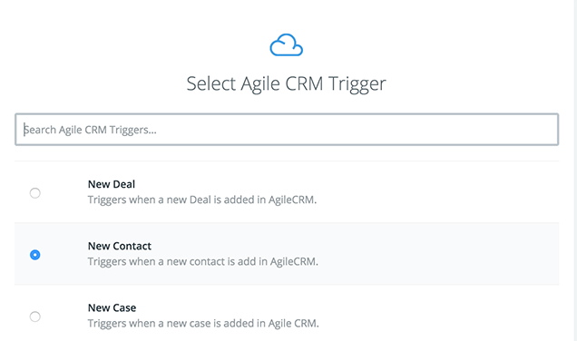
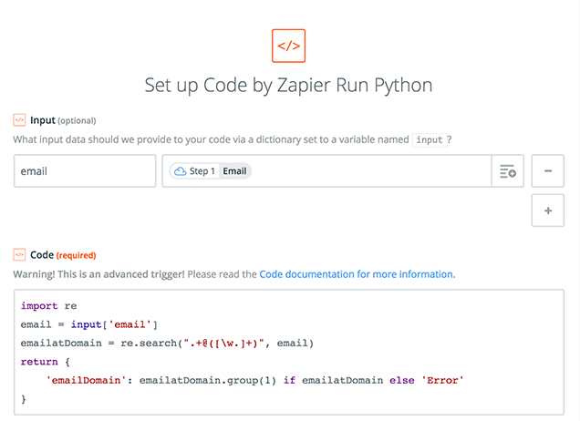
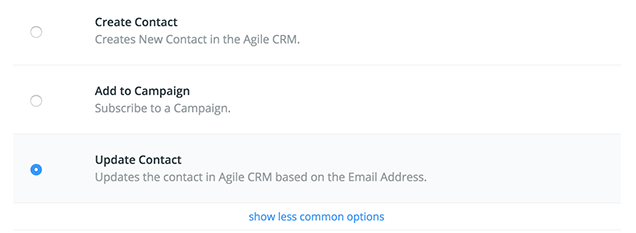

When you capture information online there is always a balance between asking for more information and making it as easy as possible for your visitors to complete their task.
You want more information to help you decide what to do with the person but you also want to maximize the number of people who give you their contact information.
In a B2B context, email addresses are king. Every form has an email field. But everything else is up for debate particularly when you need more information to qualify whether it is worth having a sales rep contact the lead.
There is a lot that you can do with just the email address particularly if you get the email domain from the address.
Internal Notifications
Extracting the email domain from your contacts lets you trigger a number of useful internal notifications when working complex sales with long sales cycles.
If you’re selling high-priced (and hopefully high-value) items to other businesses, then often there will be several people included in the decision to buy. These sales usually take a long time. I’ve seen sales reps working an account for years before finally closing a sale.
Notifying sales reps when a new contact from one of their accounts starts interacting with your marketing materials can be of great value.
It can mean that a good prospect that wasn’t ready several years ago is now in the market.
Or, if they are already in a sales cycle, it can tell the sales rep who are some of the other decision makers who will be involved in the purchase. They can then do more research seeing what sorts of content they read on the site and learn more about the individual online.
We can trigger these notifications by matching email domains.
Lead Scoring
Another way that you can use email domain is in scoring leads that your sales team hasn’t spoken to before.
Again, presuming you’re working a complex sale with long sales cycles, seeing multiple contacts from the same email domain is a good signal that the company associated with that domain is in the market.
Matching multiple email domains over the space of a few months should give leads a big boost to their lead score and trigger a follow up from the sales team.
Collecting Pre-Sales Data
The email domain is also useful for collecting pre-sales data from other databases like Salesforce’s data.com, Dun and Bradstreet or LinkedIn.
Using the company name is unreliable when you’re tying to match different data sources.
You can have separate legal names, trade names and DBAs (doing business as).
Sometimes people include the designations like Ltd. and LLC at the end of the name, but other people often leave them out.
You even have problems with adding or leaving off the period in Ltd. or using abbreviations versus spelling out Limited.
You can have the same company name used by different companies in different parts of the world.
Sometimes people even make typos.
And finally, you can have conglomerates of multiple companies each with their own name.
If you’ve got a verified email address, then you have a unique identifier for the individual and for the company that owns that domain.
You can use the domain to more reliably get data about the company than you can a company name typed in to an online form.
One problem with using the domain is that you can have multiple domains for a company. Or different domains for different departments or regions.
The LinkedIn API helps with this challenge. It associates multiple domains with each company. You can use the API to look up company data by domain and find other domains associated with the company and then match against all of the domains.
Salesforce only lets you look up by website and email domains are often different from website domains and you won’t capture the full range of email domains associated with a particular company.
Once you connect with a data source, you can pull all sorts of information like the name, number of employees, revenue (if they are public) and all sorts of location data.
Regardless of data source, using the email domain to look up additional information from third party databases is an advanced use and should only be done by an experienced developer.
Marketing Automation
All of these uses for email domain assume that you have a complex sale and that you are using marketing automation and CRM. Some of the set up is best done in your marketing automation system.
Filtering out Gmail, Yahoo and Live/Hotmail addresses is best done in your marketing automation system. Keeping a running list of email domains that you want to filter in the marketing automation system is easier than modifying the custom script that we’re going to use.
Similarly, triggering notifications and lead scoring is best done in the marketing automation system.
Because the specifics of each system vary a great deal, we won’t cover how exactly to set up the filtering, notifying, matching and scoring. These are the types of things that marketing automation systems do well so they shouldn’t be too difficult to set up.
Zapier
Extracting the email domain from an email address is usually a customization in marketing automation systems that is not so easy to set up.
Microsoft Dynamics CRM would require some scripting in Visual Basic that would only be useful for Dynamics users. Hubspot would require that you do an API integration and host your own code.
We’re going cover how to use Zapier to extract the email domain. This way, Zapier hosts your code and you can use these instructions with any Zapier-compatible system.
Zapier recently launched multi-step Zaps that make this workflow possible.
Create a new multi-step Zap that triggers when a New Contact is added to your marketing automation system (or CRM).
The first thing you need to do is create a field to keep the email domain in your system.
Specifics of how to do this depend on your system, but it shouldn’t be difficult. Name the field Email Domain.
In Zapier, create a new Zap and select New Contact as the trigger from your marketing automation/CRM system.

Test the step and check the contact information.
Next add a Filter that checks whether the new contact has an email address.

Now comes a little bit of code, but I promise that it will be quite painless.
Add a Code by Zapier action and select Run Python.
In the Input section of the Edit Template step, select the marketing automaion/CRM email field and name it email.
Be sure to keep the name lower case or else it will break the code in the next step.

Enter the following code into the Code section.
import re
email = input['email']
emailatDomain = re.search(".+@([\w.]+)", email)
return {
'emailDomain': emailatDomain.group(1) if emailatDomain else 'Error'
}
For those of you with little knowledge of Python, here’s what’s going on.
Line 1: Import the regular expression module that will let us match patterns.
Line 2: Grab the input that we named email (and assigned to the email field from the marketing automation system) and make it a variable called email.
Line 3: Search for any combination of characters or symbols until you find an @ sign, then look for one or more upper or lower case letters, numbers and periods and create a group from whatever matches this last part of the pattern. Call the whole collection emailatDomain.
Line 4: Return the following for Zapier to use.
Line 5: Create emailDomain from the group of letters, numbers and periods after the @ sign if emailatDomain is set. Otherwise return the word Error.
Test the code against a recent contact.
Finally, we need to send the email domain back to your marketing automation or CRM system.
Create a new Update Contact type of Action for your marketing automation or CRM system.

Match the email address of the contact against the email field from your system.

And then finally, scroll down to the Email Domain field that you created in your system and match the EmailDomain variable that you returned in your Code by Zapier script.

Now you should start getting email domains separated out from the email addresses for any new contacts that enter the system from now on.
You can start using the field in your chosen system to trigger notifications, score leads, or fetch additional information about the company.